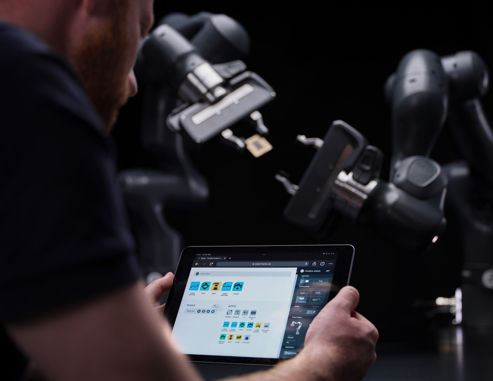

Case Study
Robot Programming & Control Software
A web-based interface that simplifies robot programming with visual tools and intuitive task management.

Overview
Background
At Franka Emika, several development teams and one design team worked on the Desk Platform. Developers often created features independently, leading to inconsistencies and experiences that didn’t fully meet user needs. To resolve this, the company initiated a unified design system with shared guidelines and components, while improving design flows for programming and automating robots to ensure a cohesive, user-centered experience.
My Role
I contributed to the creation and implementation of the design system and the definition of new interaction flows within the Desk Platform, focusing on making robot programming intuitive and user-friendly.
Key contributions:
- Led the creation and implementation of the design system for the Desk Platform.
- Defined new interaction flows to make complex robotic functions intuitive and easy to use.
- Collaborated with developers to align the design library with the existing UI code base.
- Collaborated with stakeholders to define new requirements for feature development.
- Addressed user needs while ensuring both visual consistency and technical feasibility.
- Developed implementation guidelines to help developers apply the design system flexibly.
- Strengthened collaboration, improving the platform’s usability and scalability.
Stakeholder meetings
Together with stakeholders responsible for different areas of the product, we refined the general goals for the platform’s feature development into specific, actionable topics.
- Simplified robot programming and task creation.
- Improved usability and user feedback.
- Built a unified design system and shared components.
- Ensured visual and functional consistency.
- Created a scalable foundation for future features.
We also identified key usability pain points and uncovered specific user needs, while exploring ways to improve collaboration between the design and development teams to ensure a more cohesive and efficient workflow.
Navigation flows: Roboception

This navigation flow illustrates the process of setting up a BoxPick task within the Desk Platform. It outlines each step the user takes, from task configuration to motion settings, highlighting key interaction points and setup requirements.
Topics for discussion
Key points to refine the BoxPick flow include:
- Task Setup: Simplify how users define box parameters and regions.
- Guidance & Feedback: Improve onboarding, hints, and visual feedback.
- Workflow: Clarify step sequence from detect → pick → place → confirm.
Wireframing solution

During the first round of low-fidelity wireframes, we focused on mapping the main navigation flow and defining the key interactions within the Desk Platform. The goal was to validate the overall structure, layout hierarchy, and logic of the user journey before moving into visual design.
We conducted quick testing sessions with key stakeholders and selected users to gather early feedback. This helped us identify usability issues, clarify task sequences, and ensure the flow aligned with both user needs and technical constraints.
The outcome
Roboception Setup Flow
The final flow illustrates how users configure the Roboception camera within the Desk Platform. It defines each step, from connecting the device to calibrating and validating detection, ensuring a smooth and guided setup process.
This flow improves clarity and reduces setup errors by providing a logical sequence, contextual guidance, and visual feedback at every stage, making the integration between the robot and camera more intuitive and efficient.
Design Framework
Component library, and pattern library

Guidelines
Zeplin - Adobe XD - Storybook enviroment